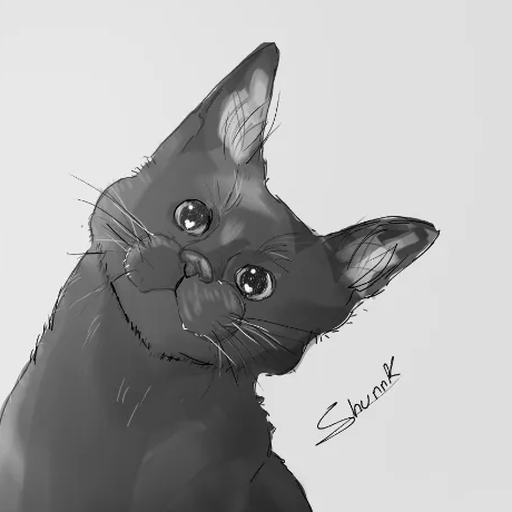

decision_ai
Typed decisions (jev-style: choice, noul, score) answered by open models running entirely in your browser. No server, no key: each model is downloaded once from Hugging Face and cached.
Play chess against Dinah
Dinah-0, a 150M-parameter decision model, picks her moves in your browser. Expect a beginner (she's just a kitten, after all).
Play chessTry decision_ai with open models
Pick a model (Dinah-0, SmolLM2, Laya, Verdict), ask your own typed questions and see the probabilities.
Open the playground